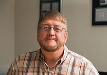
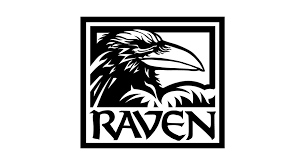

History of Activition
Activision began working out of Crane's garage in the latter half of 1979, each programmer developing their own game that was planned for release in mid-1980, Dragster, Fishing Derby, Checkers, and Boxing. The four's knowledge of the Atari 2600, as well as software tricks for the system, helped them make their own games visually distinct from Atari-produced games. To further distinguish themselves, Activision's boxes were brightly colored and featured an in-game screenshot on the back cover. Instruction manuals for games devoted at least one page to credit the developer. Additionally, for nearly all of Activision's games through 1983, the instruction manuals included instructions for sending the company a photograph of a player's high scores to receive a patch in return.
Ahead of the release of the first four games, Activision obtained space at the mid-year 1980 Consumer Electronics Show to showcase their titles, and quickly obtained favorable press. The attention afforded to Activision worried Atari, as the four's departure had already created a major dent in their development staff. Atari initially tried to tarnish Activision's reputation by using industry press at CES to label those that took trade secrets as "evil, terrible people", according to Crane, and then later threatened to refuse to sell Atari games to retailers that also carried these Activision titles. By the end of 1980, Atari filed a formal lawsuit against Activision to try to stop the company, claiming the four had stolen trade secrets and violated non-disclosure agreements. The lawsuit was settled by 1982, with Activision agreeing to pay royalties to Atari but otherwise legitimizing the third-party development model. In 2003, Activision's founders were given the Game Developers Choice "First Penguin" award, reflecting their being the first successful third-party developer in the video game industry.
Following the first round of releases, each of the founders developed their own titles, about once a year, over the first few years of the company.While their 1980 games were modest hits, one of the company's first successful games was Kaboom!, released in 1981, which was Activision's first game to sell over a million units.Activision's breakout title was 1982's Pitfall!, created by Crane. More than four million copies of the game were sold. Near the end of 1982, Kaplan left Activision to work on the development of the Amiga personal computer as he wanted to be more involved in hardware development.
Total sales for Activision were estimated at $157 million and revenues at $60 million ahead of its June 1983 initial public offering; at this point Activision had around 60 employees.Danny Goodman stated in Creative Computing Video Arcade Games in 1983, "I doubt that there is an active [Atari 2600] owner who doesn't have at least one Activision cartridge in his library".The company completed its public offering in June 1983 on NASDAQ under the stock ticker AVSN.
Activision began working out of Crane's garage in the latter half of 1979, each programmer developing their own game that was planned for release in mid-1980, Dragster, Fishing Derby, Checkers, and Boxing.The four's knowledge of the Atari 2600, as well as software tricks for the system, helped them make their own games visually distinct from Atari-produced games.To further distinguish themselves, Activision's boxes were brightly colored and featured an in-game screenshot on the back cover.Instruction manuals for games devoted at least one page to credit the developer. Additionally, for nearly all of Activision's games through 1983, the instruction manuals included instructions for sending the company a photograph of a player's high scores to receive a patch in return.
Ahead of the release of the first four games, Activision obtained space at the mid-year 1980 Consumer Electronics Show to showcase their titles, and quickly obtained favorable press. The attention afforded to Activision worried Atari, as the four's departure had already created a major dent in their development staff.Atari initially tried to tarnish Activision's reputation by using industry press at CES to label those that took trade secrets as "evil, terrible people", according to Crane, and then later threatened to refuse to sell Atari games to retailers that also carried these Activision titles.By the end of 1980, Atari filed a formal lawsuit against Activision to try to stop the company, claiming the four had stolen trade secrets and violated non-disclosure agreements.The lawsuit was settled by 1982, with Activision agreeing to pay royalties to Atari but otherwise legitimizing the third-party development model.In 2003, Activision's founders were given the Game Developers Choice "First Penguin" award, reflecting their being the first successful third-party developer in the video game industry.
Following the first round of releases, each of the founders developed their own titles, about once a year, over the first few years of the company.While their 1980 games were modest hits, one of the company's first successful games was Kaboom!, released in 1981, which was Activision's first game to sell over a million units.Activision's breakout title was 1982's Pitfall!, created by Crane. More than four million copies of the game were sold.Near the end of 1982, Kaplan left Activision to work on the development of the Amiga personal computer as he wanted to be more involved in hardware development.
Total sales for Activision were estimated at $157 million and revenues at $60 million ahead of its June 1983 initial public offering; at this point Activision had around 60 employees.Danny Goodman stated in Creative Computing Video Arcade Games in 1983, "I doubt that there is an active owner who doesn't have at least one Activision cartridge in his library".The company completed its public offering in June 1983 on NASDAQ under the stock ticker AVSN.
Former
About Blizzard
Blizzard Entertainment, Inc. is an American video game developer and publisher based in Irvine, California. A subsidiary of Activision Blizzard, the company was founded on February 8, 1991, under the name Silicon Synapse, Inc. by three graduates of the University of California, Los Angeles Michael Morhaime, Frank Pearce and Allen Adham. The company originally concentrated on the creation of game ports for other studios' games before beginning development of their own software in 1993, with games like Rock n' Roll Racing and The Lost Vikings. In 1993, the company became Chaos Studios, Inc., and then Blizzard Entertainment soon after being acquired by distributor Davidson Associates early in the following year. Shortly after, Blizzard released Warcraft: Orcs Humans. Since then, Blizzard Entertainment has created several Warcraft sequels, including highly influential massively multiplayer online role-playing game World of Warcraft in 2004, as well as three other multi-million selling video game franchises: Diablo, StarCraft and Overwatch. Their most recent projects include the online collectible card game Hearthstone; the multiplayer online battle arena Heroes of the Storm; the remaster of the original StarCraft and its expansion Brood War, StarCraft: Remastered; the replacement and sequel to the multiplayer first-person hero shooter Overwatch, Overwatch 2; the ninth expansion for World of Warcraft, Dragonflight; and the sequel to Diablo III, Diablo IV. The games operate through Blizzard's online gaming service Battle.net.
About Infinity War
Infinity Ward, Inc. is an American video game developer. They developed the video game Call of Duty, along with seven other installments in the Call of Duty series. Vince Zampella, Grant Collier, and Jason West established Infinity Ward in 2002 after working at 2015, Inc. previously.
All of the 22 original team members of Infinity Ward came from the team that had worked on Medal of Honor: Allied Assault while at 2015, Inc. Activision helped fund Infinity Ward in its early days, buying up 30 percent of the company. The studio's first game, World War II shooter Call of Duty, was released on the PC in 2003. The day after the game was released, Activision bought the rest of Infinity Ward, signing employees to long-term contracts.
Infinity Ward went on to make Call of Duty 2, Call of Duty 4: Modern Warfare, Call of Duty: Modern Warfare 2, Call of Duty: Modern Warfare 3, Call of Duty: Ghosts, Call of Duty: Infinite Warfare, the Modern Warfare reboot, and its sequel.
Co-founder Collier left the company in early 2009 to join parent company Activision. In 2010, West and Zampella were fired by Activision for "breaches of contract and insubordination", they soon founded a game studio called Respawn Entertainment. On May 3, 2014, Neversoft was merged into Infinity Ward.

About Raven Software
Raven Software Corporation is an American video game developer based in Wisconsin and founded in 1990. In 1997, Raven made an exclusive publishing deal with Activision and was subsequently acquired by them. After the acquisition, many of the studio's original developers, largely responsible for creating the Heretic and Hexen: Beyond Heretic games, left to form Human Head Studios.also they creat black ops serise.